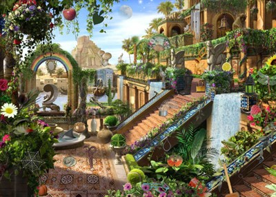
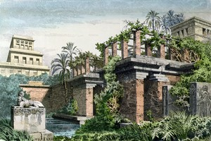
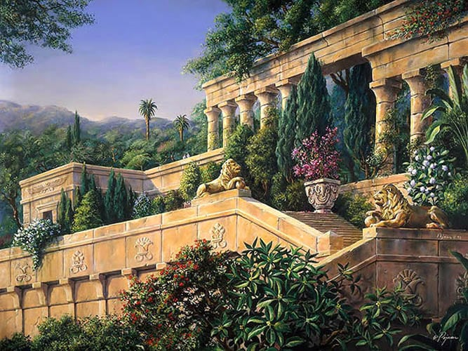
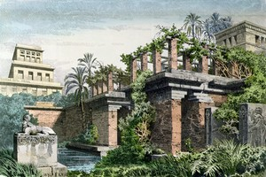
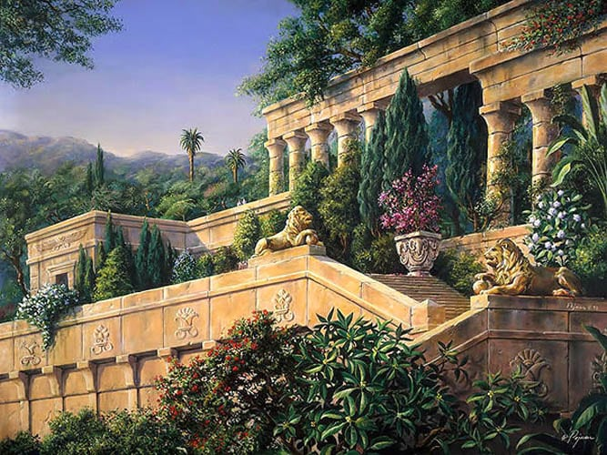

Grădinile suspendate ale Semiramidei
- o expresie de patru
termeni conținând două inadvertente: grădinile palatului din Babilon nu
erau suspendate, iar Semiramida nu putea să le construiască fiindcă n-a
existat ... Legenda atât de frumoasei și energicei Semiramida (care a
inspirat, de-a lungul anilor, scriitori ca Voltaire și Crbillon,
compozitori ca Rossini și foarte mulți artiști plastici) intemeierea
orasului Babilon și inițiativa unor lucrări arhitectonice monumentale;
unii istorici mai vechi (Herodot) și mai noi au încercat s-o identifice
cu Sammuramat care (între 809-806 î.e.n.) a guvernat Babilonul ca
regentă pentru fiul ei, regele asirian Aded-Nirairi III. Oricum, chiar
admitând identitatea Semiramida-Sammuramat (deloc certă), celebrele
grădini nu-i pot fi atribuite, fiind construite cu peste două veacuri
mai târziu, de arhitecții regelui Nabucodonosor II (cca. 605-562 î.e.n.
), mai puțin cunoscut în calitatea sa de creator al unor monumente
remarcabile, cât prin faptele sale de arme, printre care cucerirea
Ierusalimului.

 



Legenda relatează că regele Ninus, căsătorit cu Semiramida, vrând să-i
alunge frumoasei regine plictisul și să-i ofere un mediu mai atrăgător
și mai potrivit cu peisajul asirian cu care era obișnuită, a poruncit
să se înalțe grădinile suspendate. De fapt, ele nu erau
suspendate
, ci dispuse în terase care se înălțau în
trepte, formând un fel de scară uriașă, sub terase aflându-se
încăperi de locuit. Dacă luăm în considerație suprafața imensă a
grădinilor (cca. 15000 m.p. după cele mai plauzibile evaluări),
precum și faptul că arhitecții babilonieni ai vremii nu cunoșteau
nici cheia de boltă, nici arcul și că de grinzi metalice nici nu
putea fi încă vorba, unicul material de construcție fiind piatra,
este limpede că grădinile suspendate
se odihneau pe
o adevărată padure de cloane.